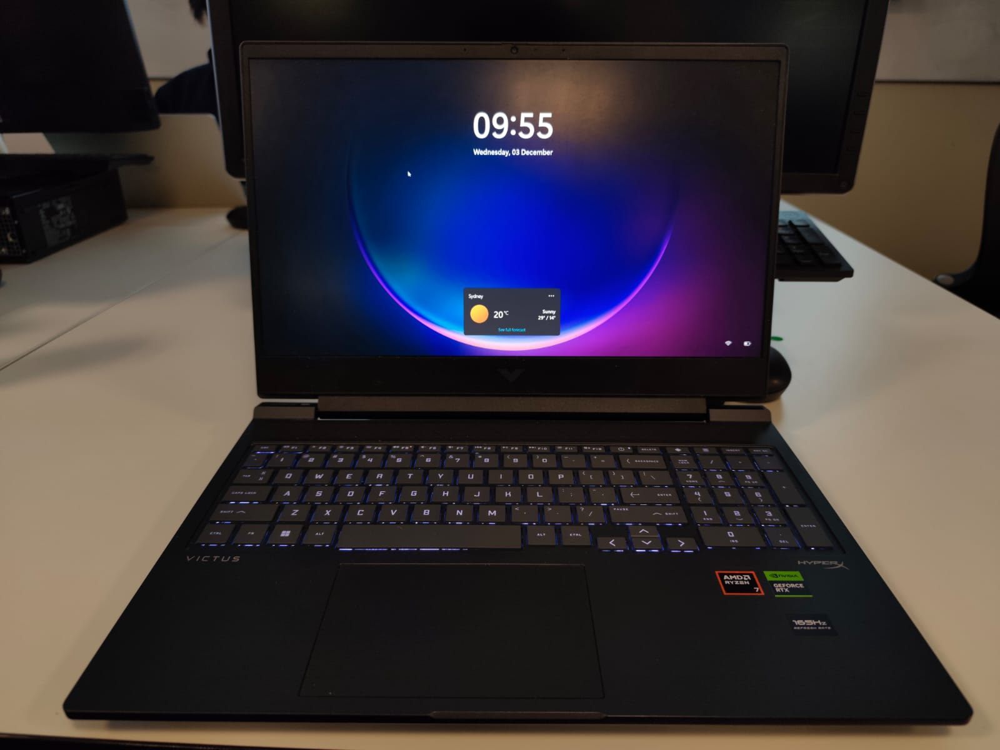
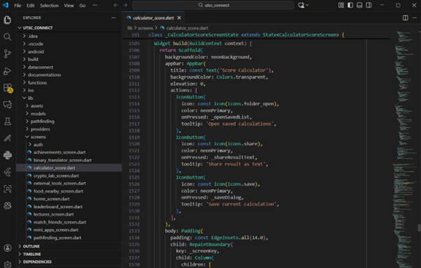

My favorite thing is my laptop, which is HP Victus 16. This is a present bought by my father for me. I love this laptop because with its outstanding performance, I can increase my productivity. This laptop has equipped with processor Ryzen 7 series 8 and VGA card RTX 4060, which definitely enhance the performance. In short, this laptop doesn’t only come with high-performance specs, but it’s also a special gift from my parents to support my college life.
I use my laptop everyday from entertainment, study even work. I use the laptop for watching Youtube video, listening to podcast, etc. This laptop has supported me through each section of my life. In addition, I use this laptop to communicate with others, such as messaging friends, joining video conference, etc. Most importantly, this laptop is a powerful tool that help me to acquire a new skill. This laptop serves as a media for me to access knowledge from numerous websites, following online tutorials and taking courses on platforms like Coursera or Udemy.
This laptop comes with a fancy outlook, with a solid black colored body and RGB light keyboard. In addition, 16.1 inches screen ad 165Hz refresh rate makes the user experience to this laptop was undefeatable. Although this is a gaming laptop, I don’t use it as gaming instead I use it for debugging heavy codes and programs.
Overall, this laptop is not just a device; it is a meaningful gift and a dependable companion that continuously supports my academic journey and personal growth.


Coding has become inseparable part of my life. For about one third of my life, roughly six years, I have been dealing with programs. I wrote my very first line of code in year seven, inspired by the movie, The Matrix. Something about seeing green line code through a computer screen has drawn my attention and curiosity. I started to experiment with program, writing my first line of code "Hello, World!". This curiosity quickly turned into passion. As the more I dived into the world of technology, I started to reliaze coding was not just a simple thing instead a powerful tool that we can use to solve real world problem.
Throughout this period of time, I have experimented with various type and field of technology, starting from Java, Python until Arduino. Although the journey was not easy, the presence of a friend makes coding more interesting to me, as we can discuss anything at anytime. The memories of writing, debugging and handling error with my friend makes this hobby more meaningful to me.
I started to solve real world problem such as inefficient control of classes in my high school. Combining python and Arduino, I am able to create SmartClass. I started to reliaze that this is not just simply a hobby but also something that I can use to propose a solution to an ineffective system. When I saw people can do their activities more effectively and efficiently with my programs, it creates sense of proud inside of me. In summary, although programming is not an easy task, it contains with endless memories and sense of proud when people are using the programs.